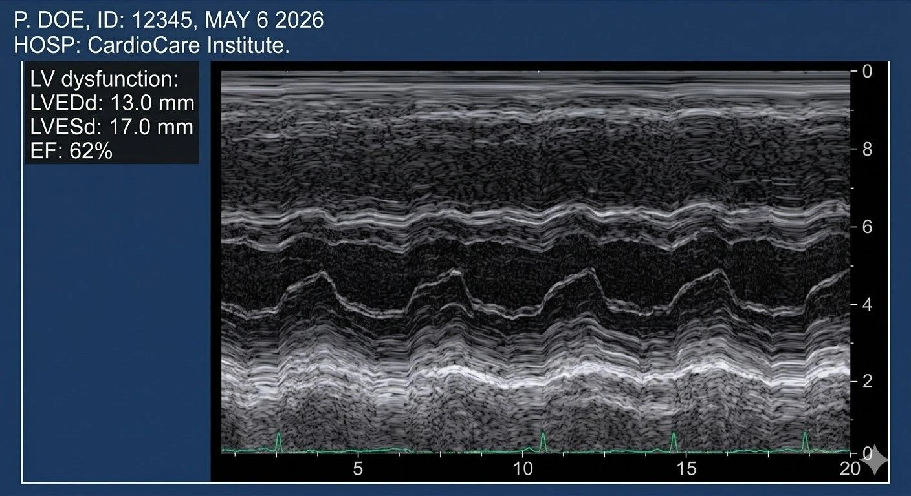
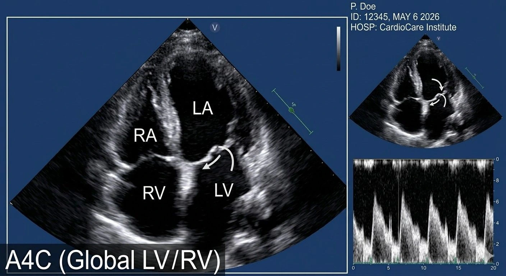

When your doctor says "I am recommending an ECHO test," it can feel unfamiliar and even a little alarming. But an echocardiogram heart test is one of the safest, most informative, and most commonly performed cardiac assessments availableand understanding what it involves can put your mind completely at ease. At Meera 4D Scans Madurai, our Meera Scans 4D Madurai cardiac services team provides accurate, affordable, and same-day 2D Echo test for heart results. If you are searching for an echo test near me Madurai, you have come to the right place. Book your 2D Echo appointment in Madurai with us today.
What is an ECHO Test?
An ECHO testshort for Echocardiogramis a medical imaging procedure that uses high-frequency sound waves (ultrasound) to create real-time images of the heart. It allows doctors to see the heart's size, shape, structure, and movementincluding how well the chambers pump blood and how efficiently the valves open and close.
The echocardiogram heart test is entirely non-invasive, uses no radiation, and is completely painless. It is the most widely used cardiac imaging tool in clinical practice worldwide, and at Meera Scans 4D Madurai cardiac services, we perform it with the highest standards of accuracy and patient care.
At Meera 4D Scans Madurai, our Meera Scans 4D Madurai cardiac services team combines advanced ultrasound technology with experienced cardiac sonologists to deliver the most accurate echocardiogram heart test reportswith same-day results, transparent pricing, and compassionate care for every patient.
Types of ECHO Tests
There are several types of echocardiogram available, each suited to different clinical needs. At our diagnostic centre for cardiac ultrasound Madurai, we offer the following:
2D Echo Test for Heart
The 2D Echo test for heart is the most commonly performed echocardiogram and the standard of care for most patients. It produces two-dimensional cross-sectional images of the heart in real time, allowing precise measurement of:
- Chamber dimensions left and right ventricle and atrium size
- Ejection fraction the percentage of blood pumped out of the left ventricle per beat (a key indicator of heart function)
- Wall motion — how each segment of the heart wall moves during contraction
- Valve structure the appearance and movement of the mitral, aortic, tricuspid, and pulmonary valves
- Pericardial fluid detection of fluid around the heart
The 2D Echo test for heart at Meera Scans 4D Madurai cardiac services takes approximately 20–30 minutes and produces a detailed report that your cardiologist or physician can use immediately.
Colour Doppler Echocardiogram
A Colour Doppler Echo is performed alongside the 2D Echo test for heart. It maps the direction and speed of blood flow through the heart chambers and valves using colour-coded imagingmaking it essential for detecting valve leakages (regurgitation), narrowing (stenosis), and abnormal blood flow patterns.
M-Mode Echocardiogram
M-Mode echo provides a one-dimensional, high-resolution view of the heart over timeideal for precise measurements of chamber walls, valve leaflets, and cardiac dimensions. It is often used alongside the standard echocardiogram heart test for detailed quantitative analysis.

ECHO vs ECGWhat is the Difference?
One of the most common questions at our diagnostic centre for cardiac ultrasound Madurai is about ECHO vs ECG differences. These two tests are often confusedbut they measure entirely different aspects of heart health.
ECHO vs ECGSide-by-Side Comparison
| Feature | ECG (Electrocardiogram) | ECHO (Echocardiogram) |
|---|---|---|
| What it measures | Electrical activity of the heart | Physical structure and function of the heart |
| Technology used | Electrodes on the skin surface | High-frequency ultrasound waves |
| What it detects | Heart rhythm, arrhythmias, electrical defects | Chamber size, valve function, ejection fraction, wall motion |
| Time taken | 5 – 10 minutes | 20 – 30 minutes |
| Radiation | None | None |
| Best for | Arrhythmia, palpitations, chest pain screening | Heart failure, valve disease, structural abnormalities |
| Can it replace each other? | Nothey complement each other | |
Is an ECHO Test Better Than an ECG?
Is an ECHO test better than an ECG? The answer is that neither test is universally superiorthey serve completely different diagnostic purposes. Understanding the ECHO vs ECG differences helps clarify when each is needed:
- ECG is better for detecting rhythm irregularities, atrial fibrillation, heart block, and identifying electrical conduction problems
- ECHO is better for seeing the heart's physical structure, measuring pump function, evaluating valve health, and diagnosing heart failure
- Together they are most powerfulmost cardiologists request both the echocardiogram heart test and an ECG for a complete cardiac evaluation
Is an ECHO test better than an ECG? If your concern is structuralvalve disease, weakened heart muscle, or heart failurethe 2D Echo test for heart provides information no ECG can. At Meera Scans 4D Madurai cardiac services, both tests are availableand our team will help guide you to the right assessment for your needs.
Why Did My Doctor Recommend an ECHO Test?
Why did my doctor recommend an ECHO test? There are many clinical reasons a doctor may refer you for an echocardiogram heart test. Here are the most common:
Symptom-Based Reasons
- Chest pain or tightnessto rule out structural cardiac causes
- Breathlessness or shortness of breathespecially on exertion, which may indicate reduced ejection fraction
- Palpitationsto assess chamber size and rule out structural causes of rhythm disturbances
- Swelling in the legs or anklesa possible sign of heart failure or valve dysfunction
- Heart murmurdetected on auscultation, requiring imaging to identify the valve involved
- Fainting episodes (syncope)to evaluate cardiac output and structural abnormalities
Condition-Based Reasons
- Hypertension (high blood pressure)to assess left ventricular hypertrophy and cardiac remodelling
- Diabetes mellitusto screen for diabetic cardiomyopathy and early heart muscle changes
- Known or suspected heart failureto measure ejection fraction and guide treatment decisions
- After a heart attack (myocardial infarction)to assess residual damage and pump function
- Congenital heart disease monitoringin children and adults with known structural heart conditions
- Pre-operative cardiac clearancebefore major surgeries, particularly in patients over 40 or with risk factors
Why did my doctor recommend an ECHO test? Whatever the reason, the echocardiogram heart test at our diagnostic centre for cardiac ultrasound Madurai gives your doctor the most complete picture of your heart's healthquickly, safely, and affordably.

What Happens During Your ECHO Test at Meera 4D Scans?
Here is a complete walkthrough of what to expect when you visit our diagnostic centre for cardiac ultrasound Madurai for your echocardiogram heart test:
Arrival & Registration
You arrive at Meera 4D Scans Madurai and complete a brief registration. Our team will review your referral letter and previous cardiac reports to prepare a personalised scan protocol.
Preparation
No fasting is required for a standard 2D Echo test for heart. You will be asked to remove clothing from the upper body and lie on a comfortable examination table. ECG electrodes may be placed on the chest to monitor heart rhythm during the scan.
The Echocardiogram Scan
Our cardiac sonologist applies warm ultrasound gel to your chest and uses a specialised transducer probe to image the heart from multiple anglesparasternal, apical, subcostal, and suprasternal viewsproducing a comprehensive cardiac assessment.
Colour Doppler Assessment
Colour Doppler imaging is performed during the scan to map blood flow across all four heart valves and through the chambersidentifying any leakage, narrowing, or abnormal flow patterns with precision.
Same Day Detailed Report
At Meera Scans 4D Madurai cardiac services, you receive your complete echocardiogram heart test report on the same daya structured, detailed document ready for your cardiologist or physician to act upon immediately.
How to Prepare for Your ECHO Test
Once you book your 2D Echo appointment in Madurai at Meera 4D Scans, here is how to prepare:
- No fasting requiredeat and drink normally before your appointment for a standard 2D Echo
- Continue your medicationsunless your doctor has specifically advised otherwise, take all regular cardiac medications as normal
- Wear comfortable clothinga two-piece outfit with easy access to the chest area is ideal
- Bring your referral letterand all previous ECG, ECHO, or cardiac reports for our sonologist to review
- Avoid body lotion on the cheston the day of the scan, as this can interfere with ultrasound gel adhesion
- Arrive 10 minutes earlyto allow comfortable registration and preparation before your scan begins
What Can the ECHO Test Detect?
A 2D Echo test for heart at Meera Scans 4D Madurai cardiac services can identify and assess a wide range of cardiac conditions:
Conditions Detected by the Echocardiogram Heart Test
- Heart failure reduced ejection fraction and impaired pump function
- Valve disease mitral regurgitation, aortic stenosis, tricuspid and pulmonary valve disorders
- Cardiomyopathy dilated, hypertrophic, or restrictive disease of the heart muscle
- Pericardial effusionabnormal fluid accumulation around the heart
- Congenital heart defectsatrial and ventricular septal defects, patent ductus arteriosus
- Post-heart attack assessmentwall motion abnormalities and residual damage evaluation
- Aortic root dilationassessment of the aorta for aneurysm risk
- Pulmonary hypertensionestimation of right heart pressures
Why Choose Meera 4D ScansEcho Test Near Me Madurai
When you search for an echo test near me Madurai, Meera 4D Scans Madurai stands out as the most trusted choice. Here is why patients across Madurai choose our diagnostic centre for cardiac ultrasound Madurai for their heart health needs:
- Advanced high-resolution cardiac ultrasound technologyfor maximum imaging accuracy
- Experienced cardiac sonologistscertified specialists in echocardiography
- Full Meera Scans 4D Madurai cardiac services2D Echo, Colour Doppler, M-Mode, and comprehensive cardiac reporting
- Same-day detailed structured reportsready for your cardiologist immediately after your scan
- Affordable transparent pricingno hidden charges, honest cost for every patient
- Trusted by 10,000+ patients in Madurai for diagnostic and cardiac imaging services
Your heart deserves the best care. Whether you are looking for an echo test near me Madurai, understanding ECHO vs ECG differences, or need answers to why did my doctor recommend an ECHO test — Meera 4D Scans Madurai has you covered. Book your 2D Echo appointment in Madurai today at the most trusted diagnostic centre for cardiac ultrasound Madurai — same-day appointments available.
Useful Resources
These trusted health and medical resources provide additional information about echocardiography, cardiac imaging, and heart health.
-
WHOCardiovascular Diseases Fact Sheet World Health Organization overview of cardiovascular disease, risk factors, and the role of diagnostic imaging in cardiac care worldwide.
-
National Health Portal IndiaHeart Disease & Cardiac Care India's official health portal covering heart disease diagnosis, cardiac investigations, and prevention guidelines.
-
NCBIEchocardiography: Clinical Applications & Guidelines Peer-reviewed clinical research on echocardiography protocols, 2D Echo diagnostic criteria, and cardiac ultrasound applications.